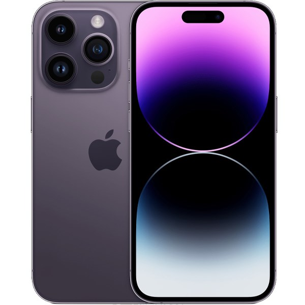

27.000.000đ
Tổng quan: iPhone 14 Pro Max — smartphone cao cấp của Apple (2022), màn hình ProMotion, chip A16 Bionic, cụm camera Pro 48MP, pin khỏe, iOS.
| Màn hình | 6.7 inch Super Retina XDR OLED, ProMotion 120Hz, 1290 x 2796 pixels |
| Chip xử lý | Apple A16 Bionic (5 nm) |
| RAM | 6 GB |
| Bộ nhớ trong | 128 GB / 256 GB / 512 GB / 1 TB (tùy phiên bản) |
| Hệ điều hành | iOS 16 (cập nhật được lên iOS mới hơn) |
| Camera sau | Chính 48 MP (wide) + 12 MP (ultrawide) + 12 MP (telephoto), hỗ trợ quay 4K, ProRAW |
| Camera trước | 12 MP, hỗ trợ Face ID và quay video 4K |
| Pin & Sạc | Khoảng 4323 mAh (tùy đo lường); sạc có dây và MagSafe không dây |
| Kết nối | 5G, LTE, Wi-Fi 6, Bluetooth 5.3, NFC, Lightning |
| Kích thước | 160.7 x 77.6 x 7.85 mm |
| Trọng lượng | khoảng 240 g |
| Màu sắc | Space Black, Silver, Gold, Deep Purple (tùy thị trường) |
| Giá tham khảo | 27.000.000đ (tham khảo trong dự án) |
iPhone 14 Pro Max mang tới màn hình lớn 6.7" với tốc độ làm tươi 120Hz, hiệu năng mạnh mẽ từ A16 Bionic và hệ thống camera nâng cấp cho khả năng chụp ảnh và quay video chuyên nghiệp.